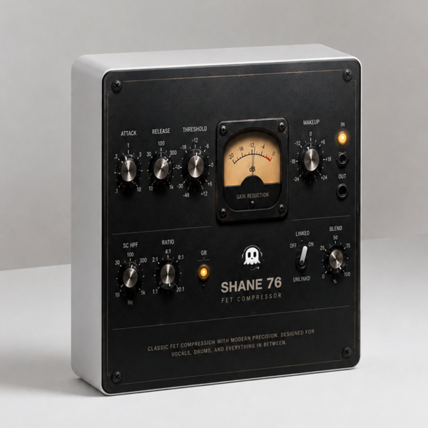

FET Compressor
Buy $25Built-in 3-day free trial · Buy once, free updates forever · Secure checkout
A FET compressor. Fast, aggressive, and happiest when you push it — with a
blend knob so you can keep the transients you just flattened.
CONTROLS
· THRESHOLD how hard it grabs, -48 to +12
· ATTACK .1 to 10
· RELEASE 10 to 1k
· RATIO 1:1 up to 20:1
· MAKEUP bring the level back, ±24 dB
· BLEND parallel compression in one knob, 0 to 100%
· SC HPF keep the lows out of the detector, 10 Hz to 1k
· LINKED tie both channels together, or let them work apart
· Backlit gain-reduction VU meter, plus a GR indicator lamp
Watch the ghost above the logo — it gets squashed flat right along with
everything else. The harder you compress, the flatter it gets.
WHAT'S NEW IN 1.4
· Maintenance update — rebuilt, re-signed and notarized for macOS and Windows
REGISTRATION
· The plug-in runs unrestricted for a 3-day trial from first launch.
· Your licence key is on your Gumroad receipt and on the download page.
· Paste it into the plug-in once — it needs internet that one time, then works offline.
· Message me on Gumroad if you need it reset for a new machine.
FORMATS
macOS AU + VST3 + AAX (Pro Tools), Universal (Intel + Apple Silicon)
Windows VST3 + AAX (Pro Tools), 64-bit
INSTALL — WINDOWS
1. Unzip.
2. Copy "Shane FET.vst3" to:
C:\Program Files\Common Files\VST3
3. Restart your DAW and rescan plugins.
INSTALL — macOS
1. Open the .pkg installer and follow the prompts.
2. Pick the formats you want (VST3 / AU / AAX).
3. Restart your DAW and rescan plugins.
Signed and notarized by Apple — no Terminal, no security workaround.
The installer asks for your admin password because the plug-ins go to /Library/Audio/Plug-Ins (available to every user on the Mac).
Signed with a Developer ID and notarized by Apple — no security
warnings, no Terminal commands.
Stuck, or something sounds off? Message me — I answer every one.
More plugins coming, posted gradually.
UPDATES
Buy once, updated forever. Every future build is free to you — Gumroad emails you when there is a new one. No subscription, no upgrade fee, no re-purchase.
FOLLOW ALONG
New plugins and what goes into them: